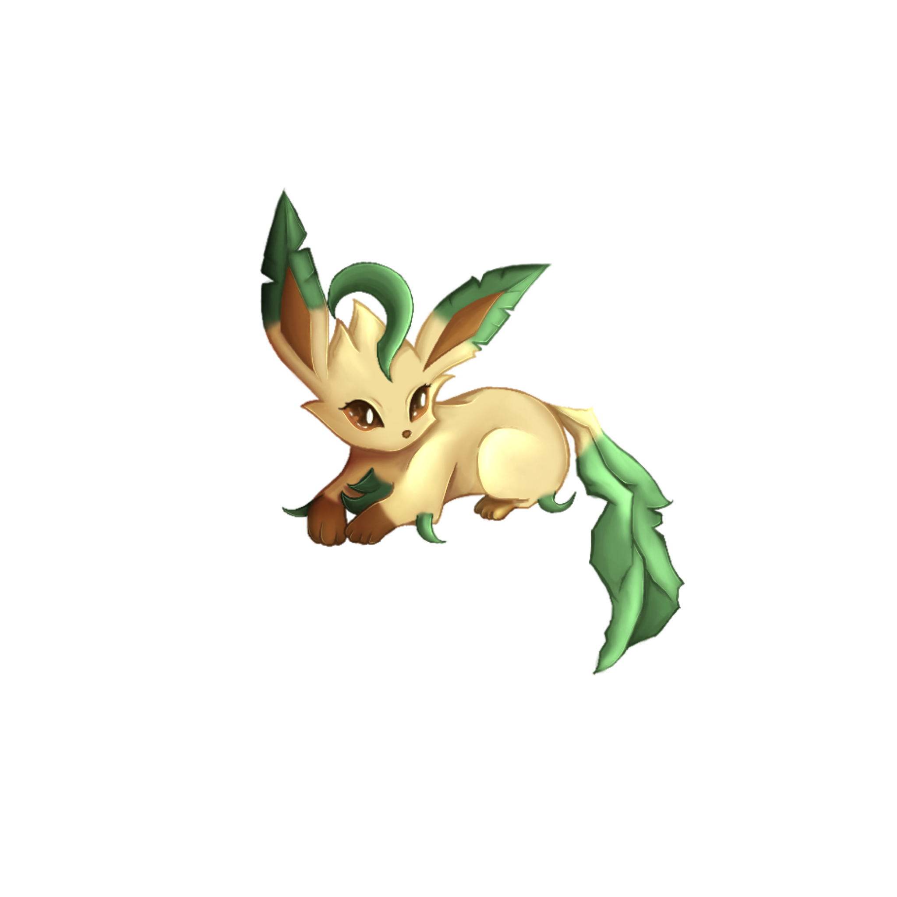

Newbie
0 XPDein Abenteuer bei den Dizzy Hunters beginnt.
Erlebe Abenteuer, sammle XP und wachse mit den Dizzys! Ob du gerade erst dazukommst oder schon eigene Events planst: Bei uns zählt die gemeinsame Zeit – ganz ohne Leistungsdruck.

Mit deinen gesammelten Erfahrungspunkten schaltest du neue Ränge frei.
Dein Abenteuer bei den Dizzy Hunters beginnt.
Du hast deine ersten gemeinsamen Abenteuer erlebt.
Du bist ein fester Teil unserer Trainer-Community.
Du hast schon viele Erinnerungen und XP gesammelt.
Du kannst eigene Events und Clubtreffen planen und veranstalten.
Der Champion hilft dem Professor bei der Organisation der Dizzys.
Der Professor leitet die Dizzy Hunters.
Champion und Professor sind besondere Teamrollen – für diese sind keine XP-Grenzen angegeben.
Einfach dabei sein, mitmachen und gemeinsam Spaß haben.
Teilnahme an einem gemeinsamen Clubtreffen
Eine Clubmission erfolgreich abschließen
Im Chat schreiben und auf dem Server aktiv sein
Ein neues Mitglied für die Dizzys gewinnen